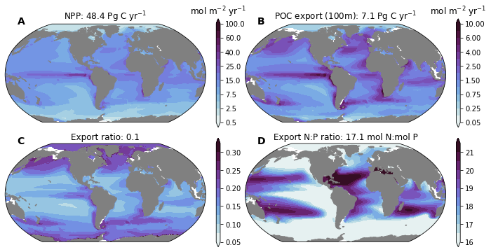
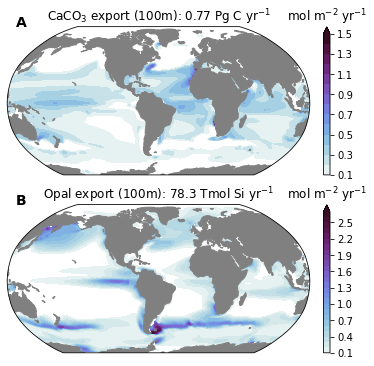

Biological Pump¶
Imports¶
%load_ext autoreload
%autoreload 2
The autoreload extension is already loaded. To reload it, use:
%reload_ext autoreload
import os
from itertools import product
import numpy as np
import xarray as xr
import intake
import matplotlib.pyplot as plt
import matplotlib.gridspec as gridspec
import matplotlib.colors as colors
import cmocean
import cartopy
import cartopy.crs as ccrs
import xpersist as xp
cache_dir = '/glade/p/cgd/oce/projects/cesm2-marbl/xpersist_cache/3d_fields'
if (os.path.isdir(cache_dir)):
xp.settings['cache_dir'] = cache_dir
os.makedirs(cache_dir, exist_ok=True)
import pop_tools
import climo_utils as cu
import plot
import utils
%matplotlib inline
Spin up a Dask Cluster¶
cluster, client = utils.get_ClusterClient()
cluster.scale(12) #adapt(minimum_jobs=0, maximum_jobs=24)
client
Client
|
Cluster
|
Read in the Data¶
catalog = intake.open_esm_datastore('data/campaign-cesm2-cmip6-timeseries.json')
df = catalog.search(experiment='historical', component='ocn', stream='pop.h').df
variables = df.variable.unique()
[v for v in variables if 'CaCO3' in v]
['CaCO3_FLUX_100m',
'CaCO3_PROD_zint',
'CaCO3_PROD_zint_100m',
'CaCO3_REMIN_zint',
'CaCO3_REMIN_zint_100m',
'CaCO3_form_zint',
'CaCO3_form_zint_100m',
'spCaCO3']
Read in the Grid from Pop-Tools¶
grid = pop_tools.get_grid('POP_gx1v7')
masked_area = grid.TAREA.where(grid.REGION_MASK > 0).fillna(0.)
masked_area.plot()
<matplotlib.collections.QuadMesh at 0x2b3fd7e44c50>
Apply Computation, Cache Using xpersist¶
nmolcm2s_to_molm2yr = 1e-9 * 1e4 * 86400 * 365.
nmols_to_PgCyr = 1e-9 * 12. * 1e-15 * 86400 * 365.
nmols_to_TmolSiyr = 1e-9 * 1e-12 * 86400 * 365.
time_slice = slice("1990-01-15", "2015-01-15")
varlist = [
'photoC_TOT_zint_100m',
'Jint_100m_DIC',
'POC_FLUX_100m',
'POP_FLUX_100m',
'SiO2_FLUX_100m',
'CaCO3_FLUX_100m',
]
ds_list = []
for variable in varlist:
xp_func = xp.persist_ds(cu.read_CESM_var, name=f'{variable}', trust_cache=True)
ds_list.append(xp_func(
time_slice,
variable,
mean_dims=['member_id', 'time'],
))
ds = xr.merge(ds_list)
r_N2C = 16. / 117.
ds['N2P_FLUX_100m'] = ds.POC_FLUX_100m * r_N2C / ds.POP_FLUX_100m
ds['e_ratio'] = ds.POC_FLUX_100m / ds.photoC_TOT_zint_100m
ds_glb = xr.Dataset()
convert_glb = dict(
photoC_TOT_zint_100m=dict(scale_factor=nmols_to_PgCyr, units='Pg C yr$^{-1}$'),
POC_FLUX_100m=dict(scale_factor=nmols_to_PgCyr, units='Pg C yr$^{-1}$'),
CaCO3_FLUX_100m=dict(scale_factor=nmols_to_PgCyr, units='Pg C yr$^{-1}$'),
SiO2_FLUX_100m=dict(scale_factor=nmols_to_TmolSiyr, units='Tmol Si yr$^{-1}$'),
)
for v in varlist:
assert ds[v].attrs['units'] == 'mmol/m^3 cm/s'
assert ds[v].dims == ('nlat', 'nlon')
if v in convert_glb:
ds_glb[v] = (masked_area * ds[v]).sum() * convert_glb[v]['scale_factor']
ds_glb[v].attrs['units'] = convert_glb[v]['units']
ds[v] = ds[v] * nmolcm2s_to_molm2yr
ds[v].attrs['units'] = 'mol m$^{-2}$ yr$^{-1}$'
for v in ['N2P_FLUX_100m', 'e_ratio']:
ds_glb[v] = (masked_area * ds[v]).sum() / masked_area.sum()
ds_glb['N2P_FLUX_100m'].attrs['units'] = 'mol N:mol P'
ds_glb['e_ratio'].attrs['units'] = ''
ds
assuming cache is correct
reading cached file: /glade/p/cgd/oce/projects/cesm2-marbl/xpersist_cache/3d_fields/photoC_TOT_zint_100m.nc
assuming cache is correct
reading cached file: /glade/p/cgd/oce/projects/cesm2-marbl/xpersist_cache/3d_fields/Jint_100m_DIC.nc
assuming cache is correct
reading cached file: /glade/p/cgd/oce/projects/cesm2-marbl/xpersist_cache/3d_fields/POC_FLUX_100m.nc
assuming cache is correct
reading cached file: /glade/p/cgd/oce/projects/cesm2-marbl/xpersist_cache/3d_fields/POP_FLUX_100m.nc
assuming cache is correct
reading cached file: /glade/p/cgd/oce/projects/cesm2-marbl/xpersist_cache/3d_fields/SiO2_FLUX_100m.nc
assuming cache is correct
reading cached file: /glade/p/cgd/oce/projects/cesm2-marbl/xpersist_cache/3d_fields/CaCO3_FLUX_100m.nc
<xarray.Dataset>
Dimensions: (nlat: 384, nlon: 320)
Coordinates:
TLONG (nlat, nlon) float64 320.6 321.7 322.8 ... 319.4 319.8
TLAT (nlat, nlon) float64 -79.22 -79.22 ... 72.19 72.19
ULONG (nlat, nlon) float64 321.1 322.3 323.4 ... 319.6 320.0
ULAT (nlat, nlon) float64 -78.95 -78.95 ... 72.41 72.41
Dimensions without coordinates: nlat, nlon
Data variables:
photoC_TOT_zint_100m (nlat, nlon) float32 nan nan nan nan ... nan nan nan
Jint_100m_DIC (nlat, nlon) float32 nan nan nan nan ... nan nan nan
POC_FLUX_100m (nlat, nlon) float32 nan nan nan nan ... nan nan nan
POP_FLUX_100m (nlat, nlon) float32 nan nan nan nan ... nan nan nan
SiO2_FLUX_100m (nlat, nlon) float32 nan nan nan nan ... nan nan nan
CaCO3_FLUX_100m (nlat, nlon) float32 nan nan nan nan ... nan nan nan
N2P_FLUX_100m (nlat, nlon) float32 nan nan nan nan ... nan nan nan
e_ratio (nlat, nlon) float32 nan nan nan nan ... nan nan nan
Attributes:
time_period_freq: month_1
history: none
cell_methods: cell_methods = time: mean ==> the variable value...
title: b.e21.BHIST.f09_g17.CMIP6-historical.011
model_doi_url: https://doi.org/10.5065/D67H1H0V
Conventions: CF-1.0; http://www.cgd.ucar.edu/cms/eaton/netcdf...
calendar: All years have exactly 365 days.
revision: $Id: tavg.F90 89644 2018-08-04 14:26:01Z klindsay $
intake_esm_varname: photoC_TOT_zint_100m
contents: Diagnostic and Prognostic Variables
source: CCSM POP2, the CCSM Ocean Component
intake_esm_dataset_key: ocn.historical.pop.hxarray.Dataset
- nlat: 384
- nlon: 320
- TLONG(nlat, nlon)float64320.6 321.7 322.8 ... 319.4 319.8
- long_name :
- array of t-grid longitudes
- units :
- degrees_east
array([[320.56250892, 321.68750895, 322.81250898, ..., 317.18750883, 318.31250886, 319.43750889], [320.56250892, 321.68750895, 322.81250898, ..., 317.18750883, 318.31250886, 319.43750889], [320.56250892, 321.68750895, 322.81250898, ..., 317.18750883, 318.31250886, 319.43750889], ..., [320.25133086, 320.75380113, 321.25577325, ..., 318.74424456, 319.24621668, 319.74869143], [320.23459477, 320.70358949, 321.17207442, ..., 318.82794339, 319.29642832, 319.76542721], [320.21650899, 320.6493303 , 321.08163473, ..., 318.91838308, 319.3506875 , 319.78351267]]) - TLAT(nlat, nlon)float64-79.22 -79.22 ... 72.19 72.19
- long_name :
- array of t-grid latitudes
- units :
- degrees_north
array([[-79.22052261, -79.22052261, -79.22052261, ..., -79.22052261, -79.22052261, -79.22052261], [-78.68630626, -78.68630626, -78.68630626, ..., -78.68630626, -78.68630626, -78.68630626], [-78.15208992, -78.15208992, -78.15208992, ..., -78.15208992, -78.15208992, -78.15208992], ..., [ 71.29031715, 71.29408252, 71.30160692, ..., 71.30160692, 71.29408252, 71.29031716], [ 71.73524335, 71.73881845, 71.74596231, ..., 71.74596231, 71.73881845, 71.73524335], [ 72.18597561, 72.18933231, 72.19603941, ..., 72.19603941, 72.18933231, 72.18597562]]) - ULONG(nlat, nlon)float64321.1 322.3 323.4 ... 319.6 320.0
- long_name :
- array of u-grid longitudes
- units :
- degrees_east
array([[321.12500894, 322.25000897, 323.375009 , ..., 317.75000884, 318.87500887, 320.0000089 ], [321.12500894, 322.25000897, 323.375009 , ..., 317.75000884, 318.87500887, 320.0000089 ], [321.12500894, 322.25000897, 323.375009 , ..., 317.75000884, 318.87500887, 320.0000089 ], ..., [320.48637802, 320.97240884, 321.4577638 , ..., 319.02760897, 319.51363979, 320.00001324], [320.45160767, 320.90286181, 321.35342745, ..., 319.097156 , 319.54841014, 320.00001293], [320.41397858, 320.82760085, 321.24052915, ..., 319.17241696, 319.58603923, 320.00001259]]) - ULAT(nlat, nlon)float64-78.95 -78.95 ... 72.41 72.41
- long_name :
- array of u-grid latitudes
- units :
- degrees_north
array([[-78.95289509, -78.95289509, -78.95289509, ..., -78.95289509, -78.95289509, -78.95289509], [-78.41865507, -78.41865507, -78.41865507, ..., -78.41865507, -78.41865507, -78.41865507], [-77.88441506, -77.88441506, -77.88441506, ..., -77.88441506, -77.88441506, -77.88441506], ..., [ 71.51215224, 71.51766482, 71.52684191, ..., 71.51766482, 71.51215224, 71.51031365], [ 71.95983548, 71.96504258, 71.97371054, ..., 71.96504258, 71.95983548, 71.95809872], [ 72.4135549 , 72.41841155, 72.42649554, ..., 72.41841155, 72.4135549 , 72.41193498]])
- photoC_TOT_zint_100m(nlat, nlon)float32nan nan nan nan ... nan nan nan nan
- units :
- mol m$^{-2}$ yr$^{-1}$
array([[ nan, nan, nan, ..., nan, nan, nan], [ nan, nan, nan, ..., nan, nan, nan], [0.0091126 , 0.01107335, 0.00905102, ..., nan, nan, nan], ..., [ nan, nan, nan, ..., nan, nan, nan], [ nan, nan, nan, ..., nan, nan, nan], [ nan, nan, nan, ..., nan, nan, nan]], dtype=float32) - Jint_100m_DIC(nlat, nlon)float32nan nan nan nan ... nan nan nan nan
- units :
- mol m$^{-2}$ yr$^{-1}$
array([[ nan, nan, nan, ..., nan, nan, nan], [ nan, nan, nan, ..., nan, nan, nan], [0.21279056, 0.21571355, 0.22301859, ..., nan, nan, nan], ..., [ nan, nan, nan, ..., nan, nan, nan], [ nan, nan, nan, ..., nan, nan, nan], [ nan, nan, nan, ..., nan, nan, nan]], dtype=float32) - POC_FLUX_100m(nlat, nlon)float32nan nan nan nan ... nan nan nan nan
- units :
- mol m$^{-2}$ yr$^{-1}$
array([[ nan, nan, nan, ..., nan, nan, nan], [ nan, nan, nan, ..., nan, nan, nan], [0.02390587, 0.02466184, 0.02558904, ..., nan, nan, nan], ..., [ nan, nan, nan, ..., nan, nan, nan], [ nan, nan, nan, ..., nan, nan, nan], [ nan, nan, nan, ..., nan, nan, nan]], dtype=float32) - POP_FLUX_100m(nlat, nlon)float32nan nan nan nan ... nan nan nan nan
- units :
- mol m$^{-2}$ yr$^{-1}$
array([[ nan, nan, nan, ..., nan, nan, nan], [ nan, nan, nan, ..., nan, nan, nan], [0.00020432, 0.00021079, 0.00021871, ..., nan, nan, nan], ..., [ nan, nan, nan, ..., nan, nan, nan], [ nan, nan, nan, ..., nan, nan, nan], [ nan, nan, nan, ..., nan, nan, nan]], dtype=float32) - SiO2_FLUX_100m(nlat, nlon)float32nan nan nan nan ... nan nan nan nan
- units :
- mol m$^{-2}$ yr$^{-1}$
array([[ nan, nan, nan, ..., nan, nan, nan], [ nan, nan, nan, ..., nan, nan, nan], [0.00717082, 0.00710713, 0.00710576, ..., nan, nan, nan], ..., [ nan, nan, nan, ..., nan, nan, nan], [ nan, nan, nan, ..., nan, nan, nan], [ nan, nan, nan, ..., nan, nan, nan]], dtype=float32) - CaCO3_FLUX_100m(nlat, nlon)float32nan nan nan nan ... nan nan nan nan
- units :
- mol m$^{-2}$ yr$^{-1}$
array([[ nan, nan, nan, ..., nan, nan, nan], [ nan, nan, nan, ..., nan, nan, nan], [0.00068615, 0.00073934, 0.00079527, ..., nan, nan, nan], ..., [ nan, nan, nan, ..., nan, nan, nan], [ nan, nan, nan, ..., nan, nan, nan], [ nan, nan, nan, ..., nan, nan, nan]], dtype=float32) - N2P_FLUX_100m(nlat, nlon)float32nan nan nan nan ... nan nan nan nan
array([[ nan, nan, nan, ..., nan, nan, nan], [ nan, nan, nan, ..., nan, nan, nan], [15.999999, 15.999997, 15.999997, ..., nan, nan, nan], ..., [ nan, nan, nan, ..., nan, nan, nan], [ nan, nan, nan, ..., nan, nan, nan], [ nan, nan, nan, ..., nan, nan, nan]], dtype=float32) - e_ratio(nlat, nlon)float32nan nan nan nan ... nan nan nan nan
array([[ nan, nan, nan, ..., nan, nan, nan], [ nan, nan, nan, ..., nan, nan, nan], [2.623385 , 2.2271342, 2.827199 , ..., nan, nan, nan], ..., [ nan, nan, nan, ..., nan, nan, nan], [ nan, nan, nan, ..., nan, nan, nan], [ nan, nan, nan, ..., nan, nan, nan]], dtype=float32)
- time_period_freq :
- month_1
- history :
- none
- cell_methods :
- cell_methods = time: mean ==> the variable values are averaged over the time interval between the previous time coordinate and the current one. cell_methods absent ==> the variable values are at the time given by the current time coordinate.
- title :
- b.e21.BHIST.f09_g17.CMIP6-historical.011
- model_doi_url :
- https://doi.org/10.5065/D67H1H0V
- Conventions :
- CF-1.0; http://www.cgd.ucar.edu/cms/eaton/netcdf/CF-current.htm
- calendar :
- All years have exactly 365 days.
- revision :
- $Id: tavg.F90 89644 2018-08-04 14:26:01Z klindsay $
- intake_esm_varname :
- photoC_TOT_zint_100m
- contents :
- Diagnostic and Prognostic Variables
- source :
- CCSM POP2, the CCSM Ocean Component
- intake_esm_dataset_key :
- ocn.historical.pop.h
After Calculation, Spin Down the Cluster¶
client.close()
cluster.close()
del client
del cluster
Plot the Results¶
E Ratio¶
ds.e_ratio.plot(vmax=0.3)
<matplotlib.collections.QuadMesh at 0x2b3fdcabd390>
POC Flux 100 m¶
ds.POC_FLUX_100m.plot()
<matplotlib.collections.QuadMesh at 0x2b3fdd1c72d0>
PhotoC TOT Zint 100 m¶
ds.photoC_TOT_zint_100m.plot(vmax=4.)
<matplotlib.collections.QuadMesh at 0x2b3fdd292710>
Jint 100 m DIC¶
ds.Jint_100m_DIC.plot(vmin=-4., vmax=0.)
<matplotlib.collections.QuadMesh at 0x2b3fdd45d3d0>

N2P Flux 100 m¶
ds.N2P_FLUX_100m.plot()
<matplotlib.collections.QuadMesh at 0x2b3fdd54da50>
Add a Cyclic Point to the Dataset¶
dsp = utils.pop_add_cyclic(ds)
dsp.info()
xarray.Dataset {
dimensions:
nlat = 384 ;
nlon = 321 ;
variables:
float64 TLAT(nlat, nlon) ;
float64 TLONG(nlat, nlon) ;
float32 photoC_TOT_zint_100m(nlat, nlon) ;
photoC_TOT_zint_100m:units = mol m$^{-2}$ yr$^{-1}$ ;
float32 Jint_100m_DIC(nlat, nlon) ;
Jint_100m_DIC:units = mol m$^{-2}$ yr$^{-1}$ ;
float32 POC_FLUX_100m(nlat, nlon) ;
POC_FLUX_100m:units = mol m$^{-2}$ yr$^{-1}$ ;
float32 POP_FLUX_100m(nlat, nlon) ;
POP_FLUX_100m:units = mol m$^{-2}$ yr$^{-1}$ ;
float32 SiO2_FLUX_100m(nlat, nlon) ;
SiO2_FLUX_100m:units = mol m$^{-2}$ yr$^{-1}$ ;
float32 CaCO3_FLUX_100m(nlat, nlon) ;
CaCO3_FLUX_100m:units = mol m$^{-2}$ yr$^{-1}$ ;
float32 N2P_FLUX_100m(nlat, nlon) ;
float32 e_ratio(nlat, nlon) ;
// global attributes:
}
Take a Look at ds_glb which Contains Global Integral Stats¶
ds_glb
<xarray.Dataset>
Dimensions: ()
Data variables:
photoC_TOT_zint_100m float64 48.38
POC_FLUX_100m float64 7.05
SiO2_FLUX_100m float64 78.3
CaCO3_FLUX_100m float64 0.7677
N2P_FLUX_100m float64 17.09
e_ratio float64 0.1478xarray.Dataset
- photoC_TOT_zint_100m()float6448.38
- units :
- Pg C yr$^{-1}$
array(48.37640707)
- POC_FLUX_100m()float647.05
- units :
- Pg C yr$^{-1}$
array(7.05017249)
- SiO2_FLUX_100m()float6478.3
- units :
- Tmol Si yr$^{-1}$
array(78.2992232)
- CaCO3_FLUX_100m()float640.7677
- units :
- Pg C yr$^{-1}$
array(0.76768008)
- N2P_FLUX_100m()float6417.09
- units :
- mol N:mol P
array(17.08596864)
- e_ratio()float640.1478
- units :
array(0.14780106)
We can use these to create titles for our plots
titles = dict(
photoC_TOT_zint_100m=f'NPP: {ds_glb["photoC_TOT_zint_100m"].values:0.1f} {ds_glb["photoC_TOT_zint_100m"].units}',
POC_FLUX_100m=f'POC export (100m): {ds_glb["POC_FLUX_100m"].values:0.1f} {ds_glb["POC_FLUX_100m"].units}',
e_ratio=f'Export ratio: {ds_glb["e_ratio"].values:0.1f}',
N2P_FLUX_100m=f'Export N:P ratio: {ds_glb["N2P_FLUX_100m"].values:0.1f} {ds_glb["N2P_FLUX_100m"].units}',
CaCO3_FLUX_100m=f'CaCO$_3$ export (100m): {ds_glb["CaCO3_FLUX_100m"].values:0.2f} {ds_glb["CaCO3_FLUX_100m"].units}',
SiO2_FLUX_100m=f'Opal export (100m): {ds_glb["SiO2_FLUX_100m"].values:0.1f} {ds_glb["SiO2_FLUX_100m"].units}',
)
titles
{'photoC_TOT_zint_100m': 'NPP: 48.4 Pg C yr$^{-1}$',
'POC_FLUX_100m': 'POC export (100m): 7.1 Pg C yr$^{-1}$',
'e_ratio': 'Export ratio: 0.1',
'N2P_FLUX_100m': 'Export N:P ratio: 17.1 mol N:mol P',
'CaCO3_FLUX_100m': 'CaCO$_3$ export (100m): 0.77 Pg C yr$^{-1}$',
'SiO2_FLUX_100m': 'Opal export (100m): 78.3 Tmol Si yr$^{-1}$'}
Plot Global Maps with Global Integrals¶
fig = plt.figure(figsize=(12, 6))
prj = ccrs.Robinson(central_longitude=305.0)
nrow, ncol = 2, 2
gs = gridspec.GridSpec(
nrows=nrow, ncols=ncol*3,
width_ratios=(1, 0.02, 0.02)*ncol,
wspace=0.15,
hspace=0.1,
)
axs = np.empty((nrow, ncol)).astype(object)
caxs= np.empty((nrow, ncol)).astype(object)
for i, j in product(range(nrow), range(ncol)):
axs[i, j] = plt.subplot(gs[i, j*3], projection=prj)
caxs[i, j] = plt.subplot(gs[i, j*3+1])
levels = dict(
photoC_TOT_zint_100m=[0.5, 1., 2.5, 5., 7.5, 10., 15., 20., 25., 30., 40., 50., 60., 80., 100. ],
POC_FLUX_100m=np.array([0.5, 1., 2.5, 5., 7.5, 10., 15., 20., 25., 30., 40., 50., 60., 80., 100. ])*0.1,
e_ratio=np.arange(0.05, 0.35, 0.025),
N2P_FLUX_100m=np.arange(16., 22., 0.5),
)
cmap_field = cmocean.cm.dense
for n, field in enumerate(['photoC_TOT_zint_100m', 'POC_FLUX_100m', 'e_ratio', 'N2P_FLUX_100m']):
i, j = np.unravel_index(n, axs.shape)
ax = axs[i, j]
cf = ax.contourf(
dsp.TLONG,dsp.TLAT, dsp[field],
levels=levels[field],
extend='both',
cmap=cmap_field,
norm=colors.BoundaryNorm(levels[field], ncolors=cmap_field.N),
transform=ccrs.PlateCarree(),
)
land = ax.add_feature(
cartopy.feature.NaturalEarthFeature(
'physical','land','110m',
edgecolor='face',
facecolor='gray'
)
)
ax.set_title(titles[field]) #dsp[field].attrs['title_str'])
cb = plt.colorbar(cf, cax=caxs[i, j])
if 'units' in dsp[field].attrs:
cb.ax.set_title(dsp[field].attrs['units'])
utils.label_plots(fig, [ax for ax in axs.ravel()], xoff=0.02, yoff=0)
utils.savefig('bio-pump-NPP-Export-e_ratio-N2P.pdf')

fig = plt.figure(figsize=(6, 6))
prj = ccrs.Robinson(central_longitude=305.0)
nrow, ncol = 2, 1
gs = gridspec.GridSpec(
nrows=nrow, ncols=ncol+1,
width_ratios=(1, 0.02)*ncol,
wspace=0.01,
hspace=0.2,
)
axs = np.empty((nrow, ncol)).astype(object)
caxs= np.empty((nrow, ncol)).astype(object)
for i, j in product(range(nrow), range(ncol)):
axs[i, j] = plt.subplot(gs[i, j], projection=prj)
caxs[i, j] = plt.subplot(gs[i, j+1])
levels = dict(
CaCO3_FLUX_100m=plot.nice_levels(ds.CaCO3_FLUX_100m),
SiO2_FLUX_100m=plot.nice_levels(ds.SiO2_FLUX_100m),
)
cmap_field = cmocean.cm.dense
for n, field in enumerate(['CaCO3_FLUX_100m', 'SiO2_FLUX_100m']):
i, j = np.unravel_index(n, axs.shape)
ax = axs[i, j]
cf = ax.contourf(
dsp.TLONG,dsp.TLAT, dsp[field],
levels=levels[field],
extend='max',
cmap=cmap_field,
norm=colors.BoundaryNorm(levels[field], ncolors=cmap_field.N),
transform=ccrs.PlateCarree(),
)
land = ax.add_feature(
cartopy.feature.NaturalEarthFeature(
'physical','land','110m',
edgecolor='face',
facecolor='gray'
)
)
ax.set_title(titles[field]) #dsp[field].attrs['title_str'])
cb = plt.colorbar(cf, cax=caxs[i, j])
if 'units' in dsp[field].attrs:
cb.ax.set_title(dsp[field].attrs['units'])
utils.label_plots(fig, [ax for ax in axs.ravel()], xoff=0.02, yoff=0)
utils.savefig('bio-pump-CaCO2-SiO2.pdf')
